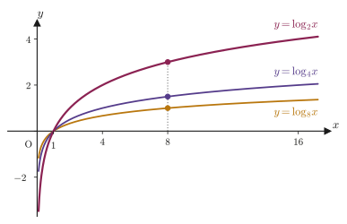
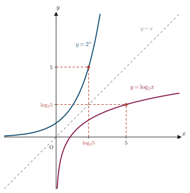

Chapter 6Properties of Logarithms
The magnitude of an earthquake, the loudness of a sound in decibels, the pH that expresses the acidity or alkalinity of an aqueous solution, the apparent magnitude that expresses the brightness of a star—all of these use a tool called the logarithm to make “quantities that change by orders of magnitude” easier to handle. For example, pH is defined in terms of the hydrogen-ion concentration $[\mathrm H^+]$ (in units of $\mathrm{mol/L}$) as $\mathrm{pH}=-\log_{10}[\mathrm H^+]$, and each time the pH changes by 1, $[\mathrm H^+]$ changes by a factor of 10 or $1/10$. Logarithms have the powerful property of “converting multiplication and division into addition and subtraction.”
In the chapters so far, starting from the addition formulas, we derived the family of trigonometric formulas: the double-angle, half-angle, triple-angle, product-to-sum, sum-to-product, and harmonic addition (combining) formulas. In this chapter we change the scene and examine, one by one and with proofs, five properties of logarithms—formulas, centered on the change-of-base formula, for making full use of the relationship between exponents and logarithms. These properties are the “grammar” that is used as a matter of course wherever logarithms appear: later in the graphs of logarithmic functions, in logarithmic differentiation, in the “bit” ($\log_2$) of information theory, in pH and equilibrium constants in chemistry, and in the corrosion potential in materials science (the Nernst equation). The goal of this chapter is not merely to memorize the formulas but to be able to trace “why they hold” with your own hands.
- A review of the definition of logarithms $\log_a b=x\iff a^x=b$, and the logarithmic version of the laws of exponents that we use repeatedly in this chapter, $\log_c P^k=k\log_c P$
- The change-of-base formula $\log_a b=\dfrac{\log_c b}{\log_c a}$ (Formula 6.1) and its proof
- The formula $\log_a b=\dfrac1{\log_b a}$ (Formula 6.2) as a special case of the change-of-base formula
- The formula $\log_{a^m}b^n=\dfrac nm\log_a b$ (Formula 6.3) for the case where the base and the argument (the number whose logarithm is taken) are both powers
- The formula $a^{\log_a b}=b$ (Formula 6.4), which expresses that logarithms and exponents “cancel each other,” and its visual meaning (graphs of inverse functions)
- The formula $a^{\log_c b}=b^{\log_c a}$ (Formula 6.5), which moves back and forth between two different bases
- Application: how logarithms are used in chemistry and materials science (pH, and the coefficient $0.0592\ \mathrm V$ in the Nernst equation)
Source notes: Yasuhide Mochizuki, Mathematics Notes: High School Mathematics (handwritten lecture notes, in Japanese), pp. 21–22.
Note: The proof portions (“Evidence”) on the relevant pages were written in Korean, so in this chapter their content has been fully translated into Japanese and included. Also, the definition of logarithms itself and the logarithmic version of the laws of exponents are outside the scope of the original notes, but we have supplied them at the beginning of Section 6.1 as a foundation for the proofs in this chapter.
6.1 Review of the Definition of Logarithms and the Change-of-Base Formula
Before proving the properties of logarithms, let us confirm the definition and the laws that we will use repeatedly in the proofs.
Definition 6.1: Logarithms (review)
Suppose $a>0,\ a\neq1$. The exponential function $y=a^x$ ($x$ ranges over all real numbers) is monotonically increasing if $a>1$ and monotonically decreasing if $0\lt a\lt1$, and its range is the set of all positive real numbers. Therefore, for every positive number $b$, there is exactly one real number $x$ satisfying $a^x=b$. We call this $x$ the logarithm of $b$ with base $a$, and we define it by
\begin{equation} \log_a b = x \iff a^x = b \label{eq:6-log-def} \end{equation}We call $b$ the argument of the logarithm (the number whose logarithm is taken). Since $a^x>0$ always holds, the argument $b$ must be positive (the logarithm of $b\le0$ is not defined).
Math Note: The logarithmic version of the laws of exponents that we use repeatedly in this chapter
Suppose $c>0,\ c\neq1$ and $P>0$. Among the laws of logarithms studied in Mathematics II, the one that matters most for the proofs in this chapter is the following.
\begin{equation} \log_c P^k = k\log_c P \qquad (k\text{ is a real number}) \label{eq:6-log-power-known} \end{equation}(Check: When $k$ is a positive integer, applying $\log_c(PQ)=\log_c P+\log_c Q$ repeatedly $k-1$ times to $P^k=P\cdot P\cdots P$ (a product of $k$ factors) gives $\log_c P^k=\underbrace{\log_c P+\cdots+\log_c P}_{k\text{ terms}}=k\log_c P$. When $k$ is zero, a negative integer, a fraction, or an irrational number, the same formula also holds, by the law of exponents $a^{p+q}=a^p a^q$ and the continuity of the logarithm.) (Roughly speaking, this means that as we move $k$ gradually from the integers toward decimals and irrational numbers, the values of both sides also change continuously along with it. A rigorous treatment is studied in university calculus.) Also, the logarithm of a number with that same number as its base is $\log_c c=1$ (because $c^1=c$). We will use these two facts without further comment from this section on.
Now let us go straight to proving the property at the heart of this chapter—the change-of-base formula. The logarithm $\log_a b$ is a quantity with “the base fixed at $a$,” but calculators and logarithm tables often provide only the common logarithm (with base 10) or the natural logarithm (with base $e$). The following formula serves as a bridge that lets us change the base freely.
Formula 6.1: Change-of-base formula
Suppose $a>0,\ a\neq1,\ b>0$, and let $c$ be any real number satisfying $c>0,\ c\neq1$. Then
\begin{equation} \log_a b = \frac{\log_c b}{\log_c a} \label{eq:6-base-change} \end{equation}holds.
Proof
Let $\log_a b=x$. By Definition 6.1 (Eq. \eqref{eq:6-log-def}), this is the same as
$$ a^x = b $$Take the logarithm with base $c$ of both sides of this equation ($c\neq1,\ c>0$ is the condition for the logarithm $\log_c(\cdot)$ to be well defined). Taking logarithms of both sides preserves the equality, so
$$ \log_c a^x = \log_c b $$holds. Applying the law of exponents in the Math Note (Eq. \eqref{eq:6-log-power-known}) to the left-hand side with $P=a,\ k=x$, we can rewrite $\log_c a^x=x\log_c a$, so
$$ x\log_c a = \log_c b $$Here, $a>0,\ a\neq1$ implies $\log_c a\neq0$ (if $\log_c a=0$, then $a=c^0=1$, contradicting $a\neq1$). Therefore we may divide both sides by $\log_c a$, which gives
$$ x = \frac{\log_c b}{\log_c a} $$Since we let $x=\log_a b$, this is none other than
$$ \log_a b = \frac{\log_c b}{\log_c a} $$as claimed.
∎
In Formula 6.1, it is important that $c$ can be anything we like. For example, taking $c=10$ lets us compute a logarithm to any base using the common logarithm $\log_{10}$ (the logarithm found on calculators and logarithm tables). Figure 6.1 below overlays the graphs of the logarithms $\log_2 x,\ \log_4 x,\ \log_8 x$ with different bases for the same argument $x$.

Application: The origin of the “0.0592” in the Nernst equation
In electrochemistry, which deals with batteries and corrosion, we use the Nernst equation, which expresses how the electrode potential $E$ depends on the concentrations (more precisely, the activities) of the reactants:
$$ E = E^\circ - \frac{RT}{nF}\ln Q $$(here $R$ is the gas constant, $T$ is the absolute temperature, $n$ is the number of electrons in the reaction, $F$ is the Faraday constant, $Q$ is the reaction quotient, and $\ln$ is the natural logarithm $\log_e$). In textbooks and laboratory notebooks, this is often written at $25\ {}^\circ\mathrm C$ ($T=298.15\ \mathrm K$) in the “common-logarithm version”
$$ E = E^\circ - \frac{0.0592}{n}\log_{10}Q $$Where this $0.0592$ comes from is precisely Formula 6.1 (the change-of-base formula). Applying Formula 6.1 to $\ln x=\log_e x$ with $a=e,\ b=x,\ c=10$ gives
$$ \ln x = \log_e x = \frac{\log_{10}x}{\log_{10}e} $$Furthermore, by Formula 6.2 (which we prove next), $\log_{10}e=\dfrac1{\log_e10}=\dfrac1{\ln10}$, so $\dfrac1{\log_{10}e}=\ln10$, and the equation above can be rewritten as
$$ \ln x = (\ln10)\log_{10}x $$Therefore $\dfrac{RT}{nF}\ln Q=\dfrac{RT\ln10}{nF}\log_{10}Q$, and substituting $T=298.15\ \mathrm K$ gives
$$ \frac{RT\ln10}{F} = \frac{8.314\times298.15\times2.3026}{96485} \approx 0.05916\ \mathrm V \approx 0.0592\ \mathrm V $$In this way, a calculation that merely changes the base of a logarithm appears as the coefficient in the empirical formulas used to find the corrosion potential of materials and the electromotive force of batteries.
Example 6.1: Converting to common logarithms with the change-of-base formula
Find the value of $\log_2 3$ using the common logarithms $\log_{10}2=0.3010,\ \log_{10}3=0.4771$ (approximate values rounded to four decimal places, that is, rounded off at the fifth decimal place).
Solution. Setting $a=2,\ b=3,\ c=10$ in Formula 6.1, we get
$$ \log_2 3 = \frac{\log_{10}3}{\log_{10}2} = \frac{0.4771}{0.3010} = 1.585\cdots $$Hence $\log_2 3\approx1.585$ (indeed, one can check that $2^{1.585}\approx3.00$).
If in Formula 6.1 we choose the auxiliary base $c$ to be the same number as the argument (that is, take $c=b$), another important formula appears as a special case.
Formula 6.2: $\log_a b = \dfrac1{\log_b a}$
Suppose $a>0,\ a\neq1,\ b>0,\ b\neq1$. Then
\begin{equation} \log_a b = \frac{1}{\log_b a} \label{eq:6-log-reciprocal} \end{equation}holds.
Proof
Let $\log_a b=x$. Then $a^x=b$ by Definition 6.1. Taking the logarithm with base $b$ of both sides (this is where $b\neq1,\ b>0$ is needed), we get
$$ \log_b a^x = \log_b b $$The right-hand side is the logarithm of a number with that same number as its base, so $\log_b b=1$. The left-hand side can be rewritten as $x\log_b a$ by the law of exponents (Eq. \eqref{eq:6-log-power-known}), so
$$ x\log_b a = 1 $$Since $a\neq1$ implies $\log_b a\neq0$, we divide both sides by $\log_b a$ to get
$$ x = \frac{1}{\log_b a} $$Since $x=\log_a b$, we have shown that $\log_a b=\dfrac1{\log_b a}$.
∎
Math Note: Formula 6.2 is a special case of Formula 6.1
Setting $c=b$ in Formula 6.1 gives $\log_a b=\dfrac{\log_b b}{\log_b a}=\dfrac{1}{\log_b a}$ (using $\log_b b=1$), which agrees exactly with Formula 6.2. In the original notes, the two formulas are proved independently (as separate Evidence entries), but in fact Formula 6.2 is contained in Formula 6.1 from the start, as the case “$c=b$.” If you can follow both proofs with your own hands, you will develop an eye for seeing “why two formulas that look independent actually have the same content.”
Example 6.2: Checking the reciprocal relation with Formula 6.2
Find the value of $\log_2 8$ from the definition, and then use Formula 6.2 to find the value of $\log_8 2$.
Solution. Since $2^3=8$, Definition 6.1 gives $\log_28=3$. By Formula 6.2,
$$ \log_82 = \frac{1}{\log_28} = \frac13 $$Indeed, $8^{1/3}=2$ (here $8=2^3$ is raised to the reciprocal of its exponent 3—that is, the cube root of 8 is 2), so this is correct.
6.2 Logarithms of Numbers with Exponents
Let us consider logarithms whose base and argument are themselves in the form of powers, for example $\log_4 8$ and $\log_9 27$. When both the base and the argument can be written as powers of the same number, as in $4=2^2,\ 8=2^3$ or $9=3^2,\ 27=3^3$, the value of the logarithm is a simple ratio determined only by the exponents of the base and the argument. We derive this relation from Formula 6.1 and the laws of exponents.
Formula 6.3: $\log_{a^m}b^n=\dfrac nm\log_a b$
Suppose $a>0,\ a\neq1,\ b>0$, and let $m,n$ be real numbers (with $m\neq0$). Then
\begin{equation} \log_{a^m}b^n = \frac nm\log_a b \label{eq:6-log-power} \end{equation}holds.
Caution: Why $m\neq0$ is required
If $m=0$, the base becomes $a^0=1$, and the logarithm $\log_1(\cdot)$ cannot be defined in the first place (it violates the condition “base $\neq1$” in Definition 6.1). Also, $m,n$ need not be integers; any real numbers will do (since $a>0$, $a^m$ makes sense even when $m$ is a real number).
Proof
We use Formula 6.1 (the change-of-base formula) with base $a^m$ and argument $b^n$. That is, if we choose one auxiliary base $c$ satisfying $c>0,\ c\neq1$, then
$$ \log_{a^m}b^n = \frac{\log_c b^n}{\log_c a^m} $$holds. Applying the law of exponents (Eq. \eqref{eq:6-log-power-known}) to the numerator and to the denominator—for the numerator, with $P=b,\ k=n$, we have $\log_c b^n=n\log_c b$, and for the denominator, with $P=a,\ k=m$, we have $\log_c a^m=m\log_c a$—we get
$$ = \frac{n\log_c b}{m\log_c a} $$Since $m\neq0$, we regard the numerator and the denominator as the products of $n,\ m$ with $\log_c b,\ \log_c a$, respectively, and factor out $\dfrac nm$, which gives
$$ = \frac nm\cdot\frac{\log_c b}{\log_c a} $$Finally, by Formula 6.1 (Eq. \eqref{eq:6-base-change}), $\dfrac{\log_c b}{\log_c a}$ is exactly equal to $\log_a b$. Therefore
$$ \log_{a^m}b^n = \frac nm\log_a b $$has been proved.
∎
Example 6.3: Logarithms of powers of a common base
Find the value of $\log_927$ (a) directly from the definition and (b) from Formula 6.3, and check that the two results agree.
Solution. (a) We find $x$ satisfying $9^x=27$. Since $9=3^2,\ 27=3^3$, from $9^x=3^{2x}=27=3^3$ we get $2x=3$, so $x=\dfrac32$. Hence $\log_927=\dfrac32$.
(b) Since $9=3^2,\ 27=3^3$, setting $a=3,\ m=2,\ b=3,\ n=3$ in Formula 6.3 gives
(we used $\log_33=1$). Results (a) and (b) agree. As a check, we may also verify that $9^{3/2}=(3^2)^{3/2}=3^3=27$.
Example 6.4: When the base and the argument are powers of different numbers
Express $\log_425$ in terms of $\log_25$.
Solution. Since $4=2^2,\ 25=5^2$, setting $a=2,\ m=2,\ b=5,\ n=2$ in Formula 6.3 gives
$$ \log_425 = \log_{2^2}5^2 = \frac22\log_25 = \log_25 $$The base and the argument do not have to be powers of “the same number.” Even if $a=2$ (the number underlying the base) and $b=5$ (the number underlying the argument) are different, as long as the exponents $m,n$ agree (in this case both are 2), we see that the exponents cancel out cleanly: $\log_{a^m}b^n=\log_ab$.
6.3 Converting between Logarithms and Exponents
As we saw in Definition 6.1, $\log_a b=x$ and $a^x=b$ express the same relation in two different ways. What happens if we deliberately rewrite this fact in the form “compute $a$ raised to the power $\log_ab$”?
Formula 6.4: $a^{\log_ab}=b$
Suppose $a>0,\ a\neq1,\ b>0$. Then
\begin{equation} a^{\log_ab} = b \label{eq:6-log-exp-def} \end{equation}holds.
Proof
Let $a^{\log_ab}=x$. Taking the logarithm with base $a$ of both sides, we get
$$ \log_aa^{\log_ab} = \log_ax $$Applying the law of exponents (Eq. \eqref{eq:6-log-power-known}) to the left-hand side with $P=a,\ k=\log_ab$ gives $\log_aa^{\log_ab}=(\log_ab)\cdot\log_aa$, and since $\log_aa=1$ (the logarithm of a number with that same number as its base is 1), this is just $\log_ab$ itself. Hence
$$ \log_ab = \log_ax $$The left-hand side and the right-hand side are logarithms with the same base (the number $a$) and with equal values. Now let $t=\log_ab\,(=\log_ax)$. If we use the definition of the logarithm (Definition 6.1, Eq. \eqref{eq:6-log-def}: $\log_ac=s\iff a^s=c$) in the case $c=b$, we obtain $a^t=b$, and if we use it in the case $c=x$, we obtain $a^t=x$. Since $a^t$ is a uniquely determined real number (once $t$ is fixed), we have $b=a^t=x$, that is, $b=x$. Since $x$ was originally the symbol we defined to be $a^{\log_ab}$,
$$ b = x = a^{\log_ab} $$That is, $a^{\log_ab}=b$ has been proved.
∎
Intuition: “Taking $\log_a$” and “raising $a$ to some power” are inverse operations
Formula 6.4 says that if we “apply $\log_a$ to $b$ and then use the result as the exponent of a power of $a$,” we get back $b$ itself. This is exactly the same kind of “inverse operation” as putting on shoes and then taking them off, which returns us to the original (shoeless) state; in mathematical language, it is precisely the property of an inverse function. The graph of the function $y=a^x$ and the graph of the function $y=\log_ax$ are symmetric about the line $y=x$ (Figure 6.2 below). Let us follow the points in the figure: starting from $x=5$, we rise on the graph of $\log_2x$ to $y=\log_25\approx2.32$, and when we then feed that value $2.32$ in as the $x$-coordinate to the graph of $2^x$, we get $y=2^{\log_25}=5$, returning to the original $5$—this is exactly the content of Formula 6.4.

Example 6.5: Direct application of Formula 6.4
Find the value of $3^{\log_35}$.
Solution. Setting $a=3,\ b=5$ in Formula 6.4, we immediately get
$$ 3^{\log_35} = 5 $$To double-check the meaning: $\log_35$ is the number that answers “to what power must $3$ be raised to get $5$?”, so if we actually raise $3$ to exactly that power, it is only natural, by the definition, that we get back $5$.
Finally, we prove a formula that ties together two logarithms with different bases and exponentiation. Formula 6.4 was a cancellation between things with “the same base,” but the next Formula 6.5 asserts a seemingly mysterious symmetry: the value does not change even when the roles of the exponent and the argument are interchanged.
Formula 6.5: $a^{\log_cb}=b^{\log_ca}$
Suppose $a>0,\ b>0$, and let $c$ satisfy $c>0,\ c\neq1$. Then
\begin{equation} a^{\log_cb} = b^{\log_ca} \label{eq:6-log-exp-swap} \end{equation}holds.
Proof
Let $a^{\log_cb}=x$. Taking the logarithm with base $c$ of both sides, we get
$$ \log_ca^{\log_cb} = \log_cx $$Applying the law of exponents (Eq. \eqref{eq:6-log-power-known}) to the left-hand side with $P=a,\ k=\log_cb$, we get
$$ (\log_cb)(\log_ca) = \log_cx $$Now we look at the product $(\log_cb)(\log_ca)$ on the left-hand side from a different point of view, and this time we use the law of exponents in the reverse direction. If we regard it as being of the form $k\log_cP$ (with $P=b,\ k=\log_ca$), we can rewrite $(\log_ca)(\log_cb)=\log_cb^{\log_ca}$ (we have only swapped the order of the factors, so this is equal to the original left-hand side). Therefore
$$ \log_cb^{\log_ca} = \log_cx $$The two logarithms with the same base $c$ are equal. Now let $t=\log_cb^{\log_ca}\,(=\log_cx)$. By the definition of the logarithm (Definition 6.1, Eq. \eqref{eq:6-log-def}), both $c^t=b^{\log_ca}$ and $c^t=x$ hold at the same time. Since $c^t$ is a uniquely determined real number (once $t$ is fixed),
$$ b^{\log_ca} = x $$Since $x=a^{\log_cb}$,
$$ b^{\log_ca} = x = a^{\log_cb} $$That is, $a^{\log_cb}=b^{\log_ca}$ has been proved.
∎
Example 6.6: Checking Formula 6.5 with specific numbers
In the case $a=2,\ b=8,\ c=4$, verify numerically that Formula 6.5 $a^{\log_cb}=b^{\log_ca}$ holds.
Solution. First we find the values of the logarithms we need. Since $4=2^2,\ 8=2^3$, Formula 6.3 gives $\log_48=\log_{2^2}2^3=\dfrac32\log_22=\dfrac32$. Similarly, $\log_42=\log_{2^2}2^1=\dfrac12\log_22=\dfrac12$. Hence
$$ a^{\log_cb} = 2^{\log_48} = 2^{3/2} = 2\sqrt2 \approx 2.828, \qquad b^{\log_ca} = 8^{\log_42} = 8^{1/2} = \sqrt8 = 2\sqrt2 \approx 2.828 $$Both sides equal $2\sqrt2$ and agree, which confirms that Formula 6.5 holds.
6.4 Summary and Exercises
6.4.1 Summary
- Definition of logarithms: if $a>0,\ a\neq1,\ b>0$, then $\log_ab=x\iff a^x=b$. The argument $b$ must always be positive.
- All the proofs in this chapter rest on just two facts: the logarithmic version of the laws of exponents, $\log_cP^k=k\log_cP$ ($c>0,c\neq1,P>0$), and $\log_cc=1$.
- Change-of-base formula (Formula 6.1): $\log_ab=\dfrac{\log_cb}{\log_ca}$. A logarithm to any base can be rewritten as a ratio of logarithms to any other base $c$.
- The special case of Formula 6.1 with $c=b$ is Formula 6.2: $\log_ab=\dfrac1{\log_ba}$ (interchanging the base and the argument of a logarithm gives the reciprocal).
- Formula 6.3: $\log_{a^m}b^n=\dfrac nm\log_ab$ ($m\neq0$). When the base and the argument are both powers, the value of the logarithm is determined solely by the ratio of the exponents.
- Formula 6.4: $a^{\log_ab}=b$. “Taking $\log_a$” and “raising $a$ to a power” are mutually inverse operations ($y=a^x$ and $y=\log_ax$ are inverse functions, and their graphs are symmetric about the line $y=x$).
- Formula 6.5: $a^{\log_cb}=b^{\log_ca}$. The value does not change when the roles of the exponent and the argument are interchanged.
- Application: the definition of pH, $\mathrm{pH}=-\log_{10}[\mathrm H^+]$, and the coefficient in the Nernst equation, $\dfrac{RT\ln10}{F}\approx0.0592\ \mathrm V$ (at $25\ {}^\circ\mathrm C$), are both concrete examples of changing the base of a logarithm.
6.4.2 Exercises
Exercise 6.1: Converting to common logarithms with the change-of-base formula
Find the value of $\log_35$ using the common logarithms $\log_{10}3=0.4771,\ \log_{10}5=0.6990$ (approximate values rounded to four decimal places, that is, rounded off at the fifth decimal place).
Hint: Take $a=3,\ b=5,\ c=10$ in Formula 6.1. The procedure is the same as in Example 6.1.
Exercise 6.2: Checking the reciprocal relation with Formula 6.2
Find the value of $\log_39$ from the definition, and then use Formula 6.2 to find the value of $\log_93$.
Hint: First consider $3^{?}=9$. The procedure is the same as in Example 6.2.
Exercise 6.3: Logarithms of powers of a common base
Find the value of $\log_816$ (a) directly from the definition and (b) from Formula 6.3, and check that the two results agree.
Hint: Note that $8=2^3,\ 16=2^4$. The procedure is the same as in Example 6.3.
Exercise 6.4: Direct application of Formula 6.4
Find the value of $2^{\log_27}$ using Formula 6.4. Also, bearing in mind that $\log_27$ is the number that answers the question “To what power must $2$ be raised to give $7$?”, explain in one line why the answer is reasonable.
Hint: The idea is the same as in Example 6.5.
Exercise 6.5: Checking Formula 6.5 with specific numbers
For $a=3,\ b=27,\ c=9$, verify numerically that Formula 6.5, $a^{\log_cb}=b^{\log_ca}$, holds.
Hint: Since $9=3^2,\ 27=3^3$, first use Formula 6.3 to find $\log_927$ and $\log_93$ (the result for $\log_93$ in Exercise 6.2 can be used). The procedure is the same as in Example 6.6.
Exercise 6.6: Combining formulas to prove an identity (a proof problem)
Let $a>0,\ a\neq1,\ b>0,\ b\neq1$. Show, using Formula 6.2, that $\log_ab\cdot\log_ba=1$.
Hint: Simply multiply both sides of Formula 6.2, $\log_ab=\dfrac1{\log_ba}$, by $\log_ba$.
6.4.3 References
- Yasuhide Mochizuki, Mathematics Notes: High School Mathematics (handwritten lecture notes, in Japanese). The source of this chapter.
- E. Maor, e: The Story of a Number, Princeton University Press, 1994. A well-regarded popular mathematics book on the historical background of logarithms and of $e$, the base of natural logarithms.